Using LineBatch
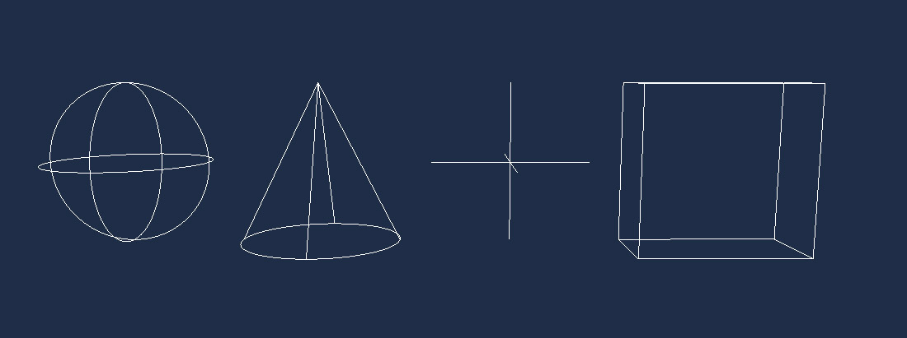
The scene's RenderManager owns a LineBatch3D that any component can draw into. Lines, shapes and bounding volumes added to it during a frame are drawn at the end of that frame and then cleared, so you add them again every frame you want to see them.
Accessing the line batch
LineBatch3D is a property of the concrete RenderManager class (namespace Evergine.Framework.Managers). Components receive the scene's render manager typed as BaseRenderManager, so you either bind it with its concrete type or cast it.
The usual place to draw is a Drawable3D, whose Draw method runs once per frame while the render manager collects what to render:
using Evergine.Common.Graphics;
using Evergine.Framework.Graphics;
using Evergine.Framework.Managers;
using Evergine.Mathematics;
public class MyDrawable : Drawable3D
{
public override void Draw(DrawContext drawContext)
{
// Drawable exposes the manager as BaseRenderManager; LineBatch3D lives on the concrete RenderManager.
var lineBatch = (this.RenderManager as RenderManager)?.LineBatch3D;
lineBatch?.DrawLine(Vector3.Zero, Vector3.Up, Color.Red);
}
}
Add it to an entity in your scene like any other component:
protected override void CreateScene()
{
var dummyEntity = new Entity("dummy")
.AddComponent(new Transform3D())
.AddComponent(new MyDrawable());
this.Managers.EntityManager.Add(dummyEntity);
}
A Behavior works as well, which is convenient when the lines depend on logic that already lives in one. Bind the render manager with its concrete type:
using System;
using Evergine.Common.Graphics;
using Evergine.Framework;
using Evergine.Framework.Graphics;
using Evergine.Framework.Managers;
using Evergine.Mathematics;
public class DrawVelocity : Behavior
{
[BindSceneManager]
private RenderManager renderManager = null;
[BindComponent]
private Transform3D transform = null;
public Vector3 Velocity { get; set; } = Vector3.Forward;
protected override void Update(TimeSpan gameTime)
{
// The batch is cleared after every frame, so the arrow must be re-added each Update.
this.renderManager.LineBatch3D.DrawRay(this.transform.Position, this.Velocity, Color.Yellow);
}
}
Note
There is no 2D line batch. To draw lines in screen space, draw them in 3D in front of an orthographic camera.
Tip
Setting RenderManager.DebugLines to true makes every drawable draw its own debug geometry (bounding boxes, light volumes, camera frustums) into this same batch.
Shapes
Besides DrawLine, LineBatch3D has helpers for common shapes. Most methods have an overload that takes the arguments by ref, which avoids copying structs when you draw many shapes per frame, and several accept a Matrix4x4 transform that is applied to the shape.
DrawArc
Vector3 origin = Vector3.Zero;
Color color = Color.White;
// The third argument is the fraction of the full circle to draw.
lineBatch.DrawArc(ref origin, 0.5f, 0.5f, ref color);
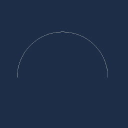
DrawAxis
lineBatch.DrawAxis(Matrix4x4.Identity, 1.0f);
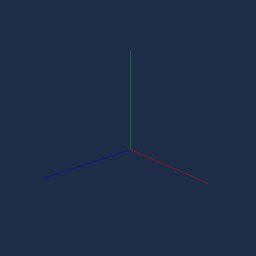
DrawBoundingBox
lineBatch.DrawBoundingBox(new BoundingBox(Vector3.Zero, Vector3.One), Color.White);
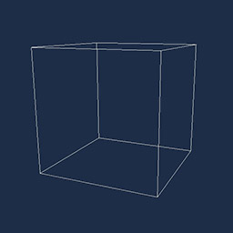
DrawBoundingFrustum
lineBatch.DrawBoundingFrustum(new BoundingFrustum(Matrix4x4.Identity), Color.White);
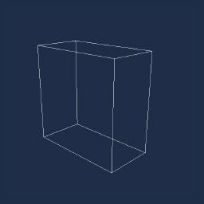
DrawBoundingOrientedBox
var orientation = Quaternion.CreateFromAxisAngle(Vector3.Right, MathHelper.PiOver4);
lineBatch.DrawBoundingOrientedBox(new BoundingOrientedBox(Vector3.Zero, Vector3.One * 0.5f, orientation), Color.White);
DrawBoundingSphere
lineBatch.DrawBoundingSphere(new BoundingSphere(Vector3.Zero, 1.0f), Color.White);
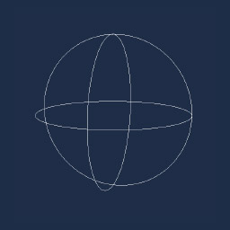
DrawRectangle
lineBatch.DrawRectangle(Vector3.Zero, Vector3.One, Color.White);
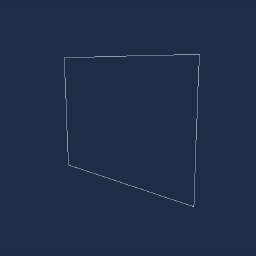
DrawCircle
lineBatch.DrawCircle(Vector3.Zero, 1.0f, Color.White);
DrawCone
// Radius, height, apex position and the direction the cone opens towards.
lineBatch.DrawCone(0.5f, 1.0f, Vector3.Zero, Vector3.Down, Color.White);
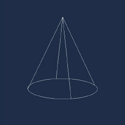
DrawCube
lineBatch.DrawCube(Vector3.Zero, Vector3.One, Color.White);
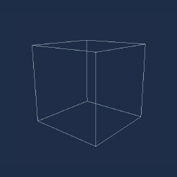
DrawForward
lineBatch.DrawForward(Matrix4x4.Identity, 1.0f);
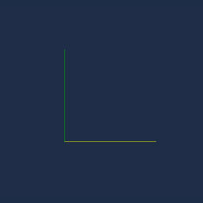
DrawPoint
lineBatch.DrawPoint(Vector3.Zero, 0.5f, Color.White);
DrawRay
lineBatch.DrawRay(Vector3.Zero, Vector3.Forward, Color.White);
DrawTriangle
lineBatch.DrawTriangle(new Vector3(-0.5f, 0, 0), new Vector3(0, 1.0f, 0), new Vector3(0.5f, 0, 0), Color.White);
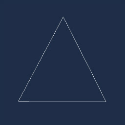